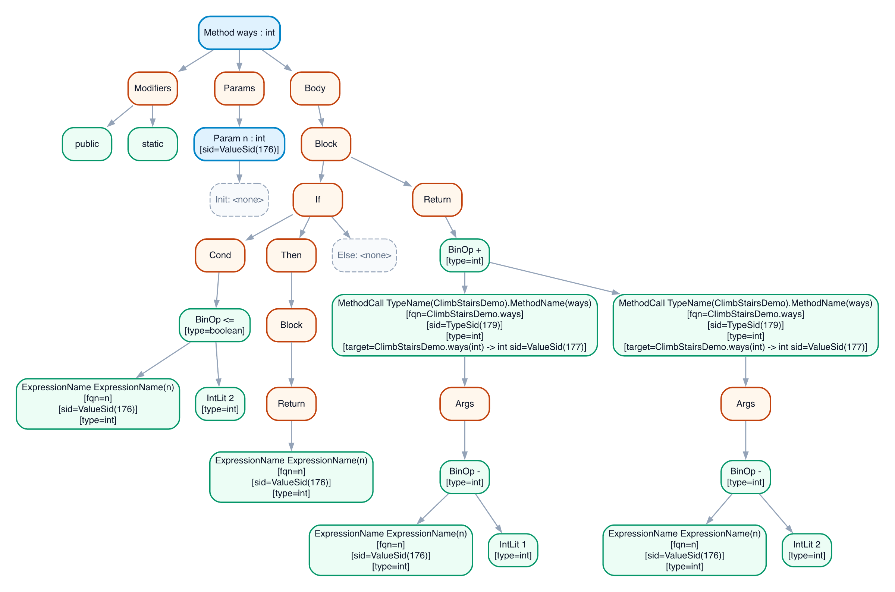

Read the source
A hand-built DFA scans tokens. An LALR(1) parser builds a tree, which we turn into an AST and check for language rules the grammar cannot express.
SCAN · PARSE · WEEDCS 444 · UNIVERSITY OF WATERLOO
We built an OCaml compiler for Joos 1W, a subset of Java. It checks a program across multiple files and turns it into 32-bit x86 assembly.
01 / THE PROJECT
More than recognizing valid syntax. The hard part is carrying the right meaning through every stage.
Joos 1W has classes, interfaces, arrays, inheritance, and enough of Java's type system to make names and method calls genuinely tricky. Our compiler handles the whole path from source files to assembly, with each pass giving the next one a more precise view of the program.
The design grew over five course assignments. We kept the stages separate, added symbol IDs and side tables for cross-file context, and used compiler-generated diagrams to see where a bad binding or type first appeared.
About the Joos 1W languageA hand-built DFA scans tokens. An LALR(1) parser builds a tree, which we turn into an AST and check for language rules the grammar cannot express.
SCAN · PARSE · WEEDAcross all input files, passes bind names to declarations, check class relationships and types, and catch unreachable code.
RESOLVE · CHECK · ANALYZEWe lay out objects and arrays, build tables for dynamic dispatch and subtype checks, then emit 32-bit x86 assembly.
LAY OUT · EMIT · RUNA LOOK INSIDE
This is part of the abstract syntax tree for a recursive method after type checking. The annotations show resolved names, symbol IDs, expression types, and call targets—the information later passes need to generate code.
Open full image
ways(int n) method02 / MY WORK
I worked across the pipeline: scanner and parser infrastructure, AST construction and visualization, symbol binding, inheritance checks, and later the runtime metadata behind object allocation, dispatch, and subtype tests. I also built out the test harness and debug workflow we used to keep the stages working together.
This was a team project with Arnav Tripathi and Andreja Japundzic. Their work spans the scanner, grammar, name resolution, type checking, code generation, and the rest of the system. The reports document the full design and our individual contributions.
03 / DESIGN REPORTS
Three reports, written as the project grew from a front end to a complete compiler.
The compiler source is private under the course's academic integrity rules. This page shares the design reports and a compiler-generated visualization.